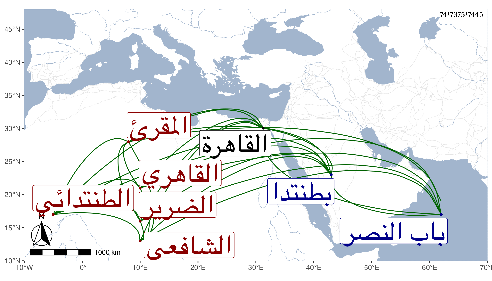

0902Sakhawi.DawLamic.ITO20230111-ara1.EIS1600.741737517445
Biography ID: 741737517445
382
الحسن بن أحمد بن محمد بن عثمان البدر أبو علي الطنتدائي ثم القاهري الشافعي المقرئ الضرير والد البهاء محمد وشقيقيه أحمد ثم يحيى ، ولد في سنة اثنتين وثمانمائة تقريبا بطنتدا وحفظ بها القرآن ثم تحول منها في سنة تسع عشرة إلى القاهرة فحفظ العمدة والشاطبية وألفية ابن مالك ، وعرض بعضها على شيخنا والبساطي وابن مغلى والتلواني والمحب الاقصرائي في آخرين ، وجمع للسبع على الشمس العاصفي وحبيب والبعض على ابن الجزري والزراتيتي ، وحضر في الفقه عند القاياتي والونائي ، وأخذ عن الشمس بن هشام في العربية وقرأ على شيخنا في البخاري حفظا إلى أول الجنائز ، وكان يطلع إلى الظاهر جقمق أحيانا لصحبة بينهما قبل السلطنة وميله إليه بحيث عمل له راتبا على الجوالي وربما أحسن إليه بغير ذلك ، وكان خيرا سليم الصدر منعزلا على التلاوة وربما استعان بمن يطالع له في شرح المنهاج للدميري ونحوه ، وكنت ممن يقصدني لذلك وللسؤال عن أشياء قانعا باليسير سيما بأخرة متعففا . انقطع ببيته مدة طويلة حتى مات في شعبان سنة ثمان وثمانين وصلى عليه بمصلى باب النصر دفن هناك رحمه الله وايانا .
